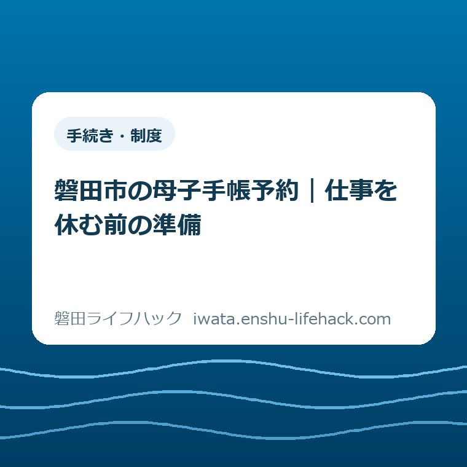

手続き・制度
磐田市の母子手帳予約｜仕事を休む前の準備

この記事の要点
Q. 母子手帳を受け取りたい。仕事を休む前に何を見ればいい？
A. 磐田市の母子健康手帳は母子モで予約し、平日にiプラザ2階で受け取ります。面談と給付手続きは30～60分程度。仕事の調整は往復時間も足して考えます。第2子以降は胎児登録が先です。必要書類や給付の扱いは個別条件で変わるため市の案内を確認し、今日は母子モの予約枠を見るところから始めてください。
通院に加えて、仕事を休む日を決める負担
妊娠が分かった後の通院と、母子健康手帳を受け取るための外出は、仕事の予定表では別々の用事です。病院の予約を取り、引き継ぎを考え、体調を見ながら移動する。そのうえで市の窓口へ行く日も決めるのですから、「予約してください」の一文だけで片付く負担ではありません。
必要書類や給付の扱いは、本人が行くか、代理人が行くか、転入したばかりかなどの個別条件で変わります。この記事は2026年9月14日に確認した磐田市の案内をもとに、仕事を調整する前に見ておきたい順序を整理します。妊娠の診断や体調の判断をする記事ではありません。
大石浩之（磐田市／不動産業）です。私は、手続きの説明は「何を出すか」に加えて、「誰が、何時から何時まで動くか」が見えて初めて役に立つと考えます。母子手帳の予約でも、取得の手順を覚えるより先に、勤務から離れる時間の見通しを持てる形にしたいと思います。
手続きそのものの入口は、当サイトの妊娠・出産の手続きガイドにまとめています。ここでは、窓口の一覧を繰り返すのではなく、「午前を休むか」「通院と同じ日にできるか」を考えるための材料に絞ります。家族の送迎や上の子の予定がある場合も、同じ予定表に載せて読んでください。
市の交付案内で確認できる予約方法と場所
磐田市「妊娠の届出・母子健康手帳の交付」は、2026年9月4日更新の案内です。いわた子育てアプリ「母子モ」によるオンライン申請で予約し、予約できる日時は予約ページで確認する形になっています。9月4日はページの更新日であり、予約方式や給付制度が始まった日としては扱いません。
交付場所は、磐田市国府台57－7のiプラザ（総合健康福祉会館）2階です。担当は、こども若者家庭センターの子育てサポートグループ。
市役所という言葉だけで行き先を覚えると建物を取り違えるおそれがあるため、勤務先へ予定を伝えるときにも「iプラザ2階」と具体的に控えるのが私の提案です。
交付は月曜日から金曜日の予約制です。土曜日、日曜日、国民の祝日・休日、年末年始は除かれます。市のページ下部には担当窓口の受付時間として午前8時30分から午後5時15分とありますが、その全時間帯で好きな時刻に予約できるという意味ではありません。実際の予約枠は母子モで確認します。
市は、医療機関で妊娠が確定し、分娩予定日が分かった段階で交付申請をするよう案内しています。妊娠確定の説明には、医師から母子手帳の交付を受けるよう言われたとき、という目安があります。自分の週数だけで判断せず、受診先からの案内と市の交付案内を照らして予約を進めてください。
母子健康手帳の交付時には、健診に関わる受診票や受診券も一緒に交付されます。手帳という冊子だけを取りに行く用事と考えると、この役割を見落とします。次の通院との日程関係で迷う場合は、自己判断で受診日を動かす前に、医療機関と市の担当窓口に確認する内容を分けておくと話が整理できます。
30～60分の面談から、勤務を離れる時間を逆算する
磐田市の交付案内では、保健師等による面談と「妊婦のための支援給付金」の手続きに、30～60分程度かかるとされています。
受け取りだけなら短時間で終わると思っていた方には、ここが意外な点かもしれません。
所要時間の幅が示されているので、30分ぴったりで次の仕事に戻る計画にはしない方がよいと私は考えます。
仕事の調整に使う時間は、面談の長さだけでは足りません。勤務先や自宅からiプラザまでの往路、建物に入って2階へ向かう時間、面談と手続き、帰りの移動を並べて考えます。市が示す30～60分に、家からの往復時間まで含まれていると読むことはできません。
例えば、片道20分、面談と手続きに60分、移動の前後の余裕を合計20分と仮定します。この場合は20分＋60分＋20分＋20分で120分です。これは休みの取り方を考えるための計算例であり、磐田市の標準所要時間でも、待ち時間の実測でもありません。片道の時間はそれぞれの出発地に置き換えます。

通院と交付を同じ日にまとめられれば、外出日を分けずに済む可能性があります。ただし、病院を出る時刻が読めない日に、直後の交付枠を入れると、今度は遅刻を心配することになります。同日にするかは、予約枠だけでなく、通院の終了見込みや移動の負担を見て決めるものです。
私は、午前休か時間単位の休みかを、この記事だけで決めてよいとは思いません。職場の休暇の運用、担当業務、移動距離が違うからです。まず「何時まで仕事に戻れない可能性があるか」を把握し、その時間帯を調整する方が、休みの名前から先に考えるより具体的になります。
職場へ伝える内容も、交付の所要時間と仕事の引き継ぎを分けて準備する方法があります。「この時間帯は不在予定」「戻る時刻には余裕を持たせたい」といった勤務上の情報を整理し、誰にどこまで事情を伝えるかは本人の状況に合わせます。家族や職場への説明を一度に全部済ませる必要はありません。
母子モで予約枠を見る前に、登録する赤ちゃんを確認
第2子以降の母子健康手帳を予約する場合、磐田市は母子モで「おなかの赤ちゃん」を登録してから申請・予約できると案内しています。すでに上の子の情報を登録して使っているアプリでも、今回の妊娠の登録が予約前に必要です。アプリが入っていることと、今回の申請準備が整っていることは別です。
市が示す操作の順序は、3本線のMENUから設定へ進み、「お子さまを登録」、続いて「おなかの赤ちゃんを登録」です。
第2子以降で予約に進めないときは、この登録を確認するのが入口になります。画面の表示が案内と違う場合は、むやみに上の子の情報を消すのではなく、市の操作方法の資料を確認します。

初めて母子モを使う場合は、市の交付ページにあるダウンロードと操作方法の案内から進めます。アプリ名を検索して出てきた説明が、磐田市の予約の説明とは限りません。市のページを起点にすれば、アプリへの入口と市が用意した資料を同じ場所で確認できます。
予約枠を確認する段階では、候補の日にちだけでなく開始時刻も控えます。空きを見ただけの状態と、申請を送って予約を確定した状態は分けておきたいところです。画面に表示される案内に従い、確定した日時や受付内容を自分で見返せるようにします。空き枠は動くので、この記事では具体的な空き時刻を掲載しません。
上の子の予防接種もアプリで管理しているご家庭は、今回の妊娠の予約と混ぜずに扱うと整理できます。当サイトの子どもの予防接種とアプリを確認する記事は、上の子の予定を見直すときの補助にしてください。今日の母子手帳予約と、後で見直す予定を分けるためのリンクです。
持ち物と給付は、自分の条件に合う欄を読む
母子健康手帳の交付では、手帳の申請に加えて給付に関わる手続きもあります。磐田市「妊婦のための支援給付制度」は、妊娠届の提出時に認定と給付の申請をあわせて行う流れを示しています。2026年9月14日に、この補足案内も確認しました。手帳を予約しただけで給付の手続きまで全部終わるとは考えず、当日の説明を受ける時間を予定に入れます。
市の給付案内では、振込先は申請者である妊婦本人の口座です。家計を一つの口座で管理していても、家族名義の口座でよいと判断しないようにします。口座情報の用意の仕方や、交付当日に必要な書類は、予約時の案内と市の担当窓口で確認してください。
私は、本人が初めて交付を受ける場合の持ち物を、別の条件の欄から寄せ集めて一覧にすることは避けたいと考えます。市のページには、代理人の場合、外国籍の場合、転入の場合などの説明が分かれています。自分に当てはまる欄を選ばないと、不要な書類を取りに行く手間や、必要な確認の抜けにつながります。
例えば代理人の届出では、市の交付案内に、妊婦の個人番号を確認するもの、代理権を確認するもの、代理人の身元を確認するものという区分があります。任意代理人と法定代理人では説明も異なります。「家族なら手ぶらで代わりに行ける」と考えず、該当する欄と委任状の案内を確認する必要があります。
代理人の届出後には、地区担当保健師から妊婦本人に改めて連絡することも市の案内に記載されています。
代理を頼めば本人への確認も一切なくなる、という流れではありません。仕事の事情で代理を検討する場合は、その後に連絡を受けられる時間の扱いも市に相談しておくと、予定が立てやすくなります。
転入した方については、給付の受給状況に応じた申請の案内が別にあります。すでにほかの市町村で手帳を受け取っている場合に、今回の記事の「初めて交付を受ける予約」をそのまま当てはめないでください。転入前に何を申請し、何を受け取ったかを整理してから市に確認するのが私の提案です。
出産後の家計について調べるときには、当サイトの児童手当の対象と申請を整理した記事もあります。ただし、児童手当と今回の妊娠時の給付は別の手続きです。母子手帳の予約画面で両方を済ませられると思い込まず、制度名ごとに案内を分けて保管してください。
良い点——予約と相談を一緒に予定へ入れられる
磐田市の交付案内の良い点は、予約方法だけでなく、面談と給付手続きの所要時間まで書かれていることです。
私は、窓口に行く前から時間の幅が分かることを評価します。「行けば分かる」では、職場への連絡や家族の送迎の調整が後手に回るからです。
予約可能な日時を母子モで確認できる仕組みも、勤務表と見比べる材料になります。窓口へ行ってから希望の日程を聞く必要がない点は助かります。ただし、実際の空きや希望どおりの予約が取れるかは別の話です。便利さを評価するときも、希望日時が保証されるような説明にはしません。
交付の場に面談が含まれることは、書類以外の困りごとを伝える時間としても意味があります。私は、仕事との両立や家族の協力について聞きたいことがあれば、一文だけでも控えて行く使い方がよいと考えます。相談する内容を立派な文章に整えるために、さらに時間を使う必要はありません。
市は予約の変更方法と、体調不良等による急なキャンセルの連絡先も示しています。
予定を守れないことを心配して予約をためらうより、変更時の出口が分かる方が予定を組みやすくなります。こうした案内は、妊娠中の予定が常に固定できるわけではない暮らしに合っていると私は感じます。
注文したい点——窓口の時間を、不在時間に翻訳したい
母子健康手帳の予約案内について私が注文したい点は、面談時間と仕事を離れる時間の違いを、より見つけやすく示してほしいことです。30～60分という案内自体は具体的です。その近くに、往復や建物内の移動も考えて予定を組むという説明があれば、休みを取る側は一段判断しやすくなります。
第2子以降の胎児登録も、上の子の情報を使い続けている方ほど見落としやすい箇所だと私は考えます。市の案内には記載があります。そのうえで、予約に進む直前にこの分岐を確認できると、画面を行き来する手間を減らせそうです。これは実際の操作不具合を報告しているのではなく、案内の見せ方への私の提案です。
持ち物についても、本人、代理人、転入など、自分の条件を選んで読める整理があると助かります。説明を全部読めば分かることと、短い休憩時間で必要な欄にたどり着けることは違います。通院や勤務の調整をすでに担っている方に、情報を仕分ける仕事まで一人で背負わせたくありません。
ただ、私は、短く書けば必ずよいとも言い切れずにいます。給付や代理の条件を削りすぎれば、今度は自分に必要な説明が落ちます。必要なのは説明の省略ではなく、予約を探す人と個別条件を確かめる人が、それぞれの入口へ進める順序ではないかと考えます。
対案・結論——今日は母子モの予約枠を確認する
仕事を休む前の今日の一歩は、母子モで母子健康手帳の予約枠を確認することです。まだ勤務の調整がついていなくても、候補の曜日と開始時刻が見えると、相談する内容が具体的になります。第2子以降の方は、今回の胎児登録を済ませてから予約へ進むという市の案内を確認してください。
枠を見た後は、希望する開始時刻の前後に、自分の往復時間と面談の目安を置きます。家族の送迎を頼むなら、送りの時刻だけでなく、帰りをどうするかも決める材料になります。予約を取る作業と、仕事や家庭の調整が済んだことを、同じ一つの完了印にしないのが私の提案です。
記録は、候補日時、確定した日時、行き先、勤務を離れる時間帯の四つがあれば、予定を見返しやすくなります。個人番号や口座情報まで勤務先に共有する予定表へ書く必要はありません。申請に使う情報と、不在時間を伝える情報を分けて扱ってください。
母子モでの予約変更はオンライン予約から行うと、市は案内しています。体調不良等で急にキャンセルする場合は、こども若者家庭センターの0538-37-2012へ連絡する案内です。予定変更の際は、予約先への連絡と、送迎・勤務の予定を変える連絡を別々に確認します。
空き枠が希望と合わない、予約操作が進まない、本人の来所が難しいといった場合は、市の担当窓口に状況を伝えます。この記事では予約枠の追加や例外対応を約束できません。分からないことを抱えたまま先に休みを確定するより、調整に必要な条件を聞く方が、やり直しを減らせます。
大石の視点——手帳を受け取る時間だけで休みを決めない
私は、手帳を受け取る時間だけで休みを決めない、と言い切ります。往復と面談を予定に載せてから、仕事を調整する。制度が整っていても、使う人が動けなければ届きません。窓口の案内を、休む人の予定表に置き換えるところまでが、暮らしの情報を伝える側の仕事だと考えます。
私がこの予定を組む立場なら、仕事の予定表を開いたときに、まずiプラザへの移動も含めた不在時間を書き込みます。空いている時間へ用事を押し込む前に、面談後すぐ仕事に戻る組み方で無理がないかを考えます。これは私自身の母子手帳取得の体験談ではなく、段取りについての意見です。本人が全部を引き受ける予定になっていないかも、同じ紙の上で見たいと思います。
一方で、半日休めば安心と一律に書くのも違うと感じます。半日の休みを作ること自体が難しい職場もあれば、遠方から移動する方もいるからです。私は休みの量を決める代わりに、判断する材料を先に渡したい。今日、母子モの予約枠を一度確認できれば、その材料が一つ増えます。
母子手帳の予約でよくある質問
磐田市の母子健康手帳予約について、仕事の調整で迷いやすい三つの質問を整理します。回答は2026年9月14日に確認した市の交付案内に基づきます。実際の空き枠、持ち物、個別事情への対応は市へ確認してください。
昼休みだけで母子手帳を受け取れますか？
磐田市の案内では、交付時の面談と給付手続きに30～60分程度かかります。往復や建物内の移動を含む時間ではないため、昼休みだけで済むとは断定できません。母子モの予約可能時刻を確認し、勤務先からの往復と前後の余裕を加えて、職場に戻る時刻を考えてください。予約枠は市の案内から確認します。
第2子以降で予約に進めないときは？
磐田市は、第2子以降の場合、母子モで今回の胎児登録をしてから申請・予約できると案内しています。3本線のMENUから設定、お子さまを登録、おなかの赤ちゃんを登録の順に確認してください。上の子が登録済みでも今回の登録は別です。画面が異なる場合や解決しない場合は、市の操作資料や担当窓口で確認します。
体調不良で予約を変更・キャンセルできますか？
磐田市の案内では、予約変更は母子モのオンライン予約から行います。体調不良等で急にキャンセルする場合は、こども若者家庭センターの0538-37-2012へ連絡するよう示されています。変更後の日時は実際の予約画面で確認してください。家族の送迎や勤務の予定も調整していた場合は、それぞれへ変更を伝えます。
制度や手続きの条件は変更される場合があります。個別の必要書類、給付の扱い、予約の状況は、最後に必ず磐田市公式の「妊娠の届出・母子健康手帳の交付」と「妊婦のための支援給付制度」で確認してください。
参考にした公式情報
- 妊娠の届出・母子健康手帳の交付／磐田市（2026年9月4日更新、2026年9月14日確認）
- 妊婦のための支援給付制度／磐田市（2026年3月30日更新、2026年9月14日確認）
 この記事の執筆：
この記事の執筆：最終確認日：2026-09-14 ／ 本記事は公表情報と執筆者の見解を分けて記載しています。制度・数値・公開状況は変更される場合があるため、最新情報は磐田市公式ページでご確認ください。